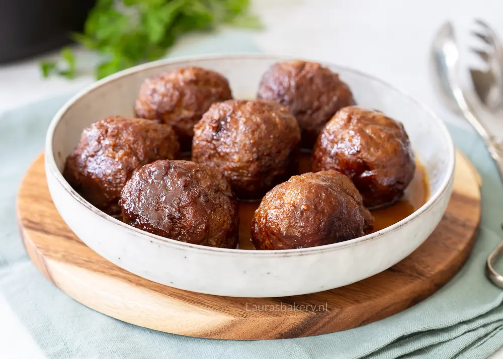

1. Gehaktballen van Laura's Bakery
Inleiding
Zelf gehaktballen maken is hartstikke makkelijk en het wordt veel gedaan in Nederland. Ik denk daarom ook dat er best wel wat mensen zullen zijn die een eigen ‘familiereceptuur’ hebben hiervoor. Maar voor iedereen die dat niet heeft heb ik hier een recept om zelf zalige gehaktballen (met jus natuurlijk) te kunnen bereiden.
Beschrijving
deze gehaktballen rijk aan smaak, maar met wat extra mosterd en ketjap manis kun je deze smaak versterken. Voeg bij het toevoegen van extra vocht (zoals ketjap manis) ook wat extra paneermeel toe om te voorkomen dat het gehakt te sappig wordt en de ballen uit elkaar vallen.
Ingrediënten
- 500 gram rundergehakt
- 2 eieren
- 60 gram paneermeel
- 1,5 el grove mosterd
- 1,5 el ketchup (Heinz)
- 1 el ketjap manis
- 1 tl nootmuskaat
Jus
- 250 ml runderfond
- 1 el ketjap manis
- 25 gram roomboter
Instructies
- Kneed alle ingrediënten voor de ballen samen in een kom en voeg een mespunt peper en zout toe. Vorm zeven stevige ballen die gelijk zijn in grootte (zo garen ze straks gelijkmatig).
- Laat de gevormde gehaktballen afgedekt een half uur tot een uur rusten in de koelkast. Dit zorgt ervoor dat de ingrediënten in de gehaktballen zullen binden en de ballen niet uit elkaar vallen.
- Als de gehaktballen voldoende hebben gerust verhit je een braadpan op medium vuur met een beetje olie erin. Leg de ballen in de hete pan en braad ze hier in 10 minuten gelijkmatig aan alle kanten in.
- Verwarm de fond in een ander pannetje en voeg ondertussen de roomboter toe aan de pan met gehaktballen. Braad de gehaktballen ook hier gelijkmatig aan alle kanten in totdat ze mooi bruin zijn
- Als de fond warm is voeg je deze ook toe, samen met de ketjap. Laat dit geheel nog 30 minuten pruttelen op een lager vuur.